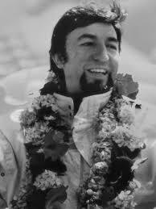
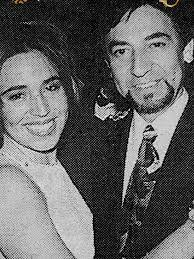
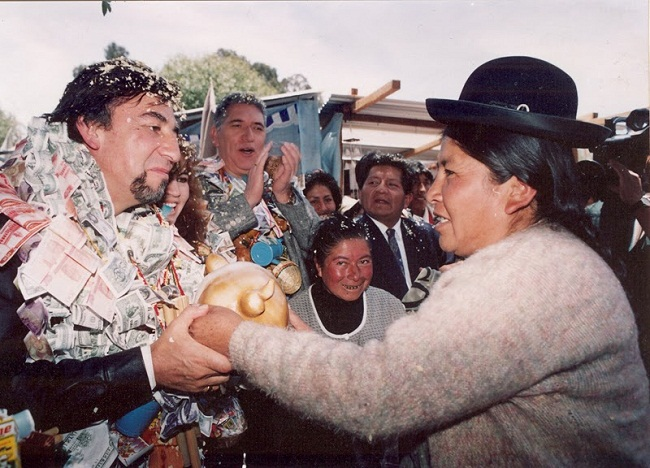

LA TORRE DEL COMPADRE
En el corazón del Valle de La Paz se alzaba la legendaria Torre de las Voces, una radio hechizada desde donde Lord Carlos “El Compadre” Palenque hablaba directamente al pueblo. No gobernaba desde un trono ni llevaba corona de oro; su poder nacía de las calles, de los mercados y de los barrios olvidados del Reino de Kollasuyo.

EL BARDO DE LOS SIN VOZ
Cada noche abría las puertas de su torre para escuchar a campesinos, artesanos, mineros y comerciantes. Con su legendario Micrófono de Hierro rompía los hechizos de silencio impuestos por los Barones del Estaño. Decían que ningún noble soportaba su magia, porque cada palabra transmitida revelaba verdades que el reino intentaba ocultar.

EL PALADÍN DEL PUEBLO
Pero El Compadre no solo transmitía mensajes. Fundó la RTP, la Red de Talleres del Pueblo: forjas, escuelas de juglares, casas de sanación y centros de aprendizaje abiertos para cualquiera, sin importar su linaje. Mientras los nobles acumulaban riquezas, él convertía cada moneda en oportunidades para su gente.

LA VOZ QUE NUNCA MURIÓ
Los Barones intentaron comprarlo con oro, castillos y poder, pero El Compadre rechazó cada oferta. Finalmente sitiaron la Torre de las Voces y Lord Carlos cayó defendiendo su señal. Antes de desaparecer, lanzó un último hechizo: grabó su voz en los vientos del Illimani. Desde entonces, cuando la noche cubre La Paz y el viento sopla entre las montañas, el pueblo asegura que todavía puede escuchar al Compadre llamándolos hermanos.